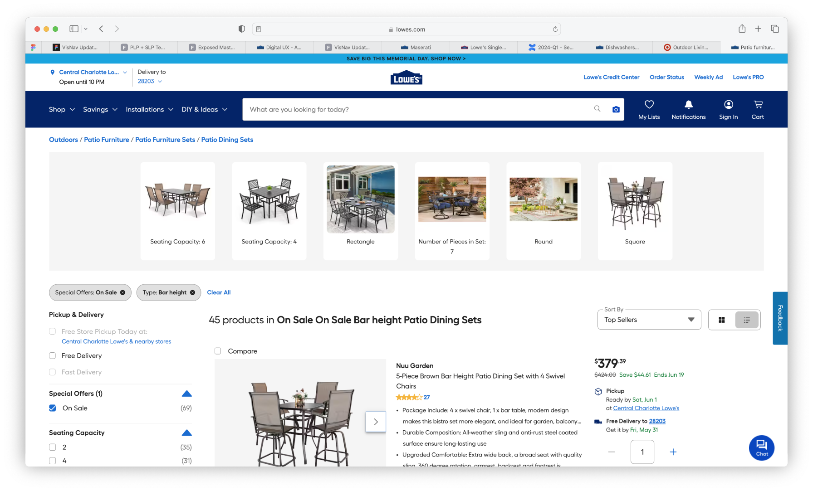
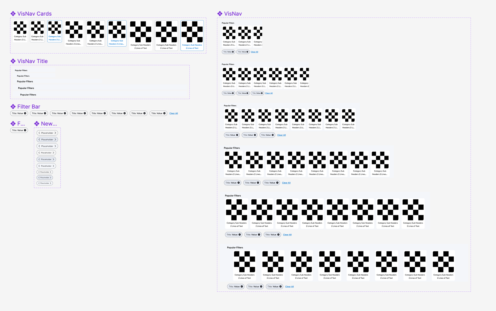

01 — Context
The most-used filter component on Lowes.com
Visual Navigation (VisNav) filters sit at the top of every Search and Browse page. They're the fastest way for customers to narrow from a category to a specific product type — highly engaged, high-leverage, and visited on every shopping session that starts with a search.
The component existed before this project, but it was fundamentally passive. Customers selected a filter chip, the page reloaded with a narrowed result set — and the VisNav chips stayed the same. The system had no awareness of what the customer had just told it.
VisNav filter chips in the Search/Browse page context
02 — Problem
Static filters break the journey at the moment of intent
When a customer selects "Ceiling Fans" as a filter, they're signaling intent. The right response is to show them the next most useful refinement — blade count, room size, finish, price range — contextually, without them having to hunt through a full filter panel.
The old VisNav couldn't do this. It showed the same chips regardless of what had been selected. Customers who wanted to go deeper into the taxonomy had to open the full filter drawer — a higher-friction path that many abandoned.
"Previously, these refinements were static, and filter options didn't refresh contextually based on the customer's selection."
The result was a broken journey: high engagement with the first VisNav tap, followed by a cliff-drop in continued refinement. Customers were signaling intent and the interface wasn't responding to it.

Before state: VisNav chips stay static after first selection
03 — Process
Understanding the refinement journey
The project started with a deep analytics review — where in the refinement sequence did customers drop off? Which categories had the steepest abandonment after the first filter selection? Which refinement paths led to the highest add-to-cart rates?
This gave us a ranked list of the most-valuable contextual transitions — the specific "if they select X, show them Y" logic that would power the dynamic system. It also told us which categories to prioritize in our testing.
Design exploration focused on the transition moment: how should the VisNav behave when a chip is selected? Instant swap? Animated transition? Show selected state before updating? I prototyped several interaction models in Figma and tested them with customers, focusing on comprehension — did they understand that the chips had updated, and why?
The key insight from testing: customers needed to see their selected state persist as a header or anchor while the remaining chips updated underneath it. Without that anchor, the update felt like an error rather than a feature.
04 — Key decisions
Three choices that drove the result
Decision 01
Selected chip becomes the section header
When a customer selects a VisNav chip, the selected filter becomes a persistent "header" for the component — visually anchoring their choice while the remaining chips refresh with the next most relevant values. This pattern also creates a platform for category-specific micro-experiences (MFEs) in future phases.
Decision 02
Contextual chip order driven by real-time data
The dynamic chips are ranked by the next most popular filter values given the customer's current selection — not by a static editorial list. This means the system gets better as more customers use it and creates a genuinely personalized narrowing experience without requiring explicit personalization infrastructure.
Decision 03
Fully responsive component library
A key investment was building the VisNav as a fully responsive, design-system-aligned component — not a one-off page treatment. This meant consistent behavior and visual language across all Search and Browse page types, improved design-dev collaboration, and a reusable base for the MFE explorations that followed.
05 — Outcome
$69M in incremental revenue — and a platform for more
The dynamic VisNav launched as an A/B test and exceeded the revenue and engagement targets on every tracked metric. $54.2M desktop + $14.8M mobile = $69M total incremental revenue.
The +6 bps desktop conversion and +28 bps % to PDP confirmed the core hypothesis: customers who could continue refining contextually went deeper into the purchase funnel. The system was stitching the shopping journey together in a way the static version never could.

After state: VisNav chips update contextually based on customer selection
06 — Component library
Built to scale across every Search and Browse surface
The component library work was a parallel investment — building the VisNav as a fully responsive, system-aligned component rather than a bespoke page treatment. This created consistency across all Search and Browse page types and gave the engineering team a clear contract to build against.
The selected-chip-as-header pattern also unlocked a future roadmap: category-specific micro-front ends (MFEs) that could render different functional experiences — a room-size calculator for ceiling fans, a finish selector for faucets — within the same VisNav framework. Several MFE explorations were prototyped but not shipped.

Responsive component library — all VisNav states and breakpoints